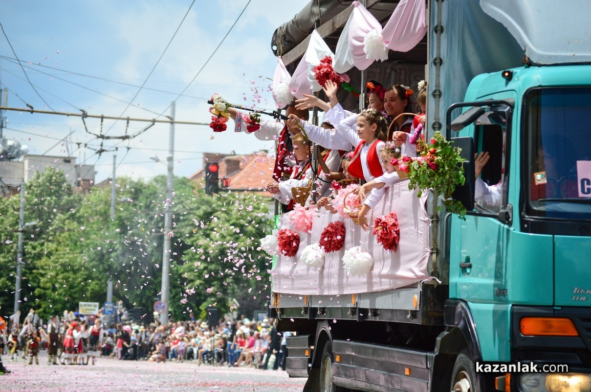
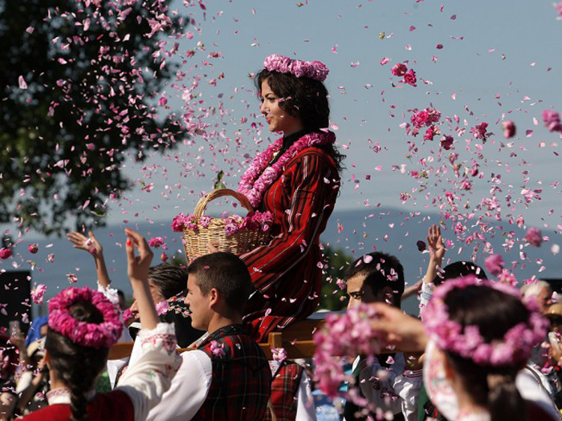
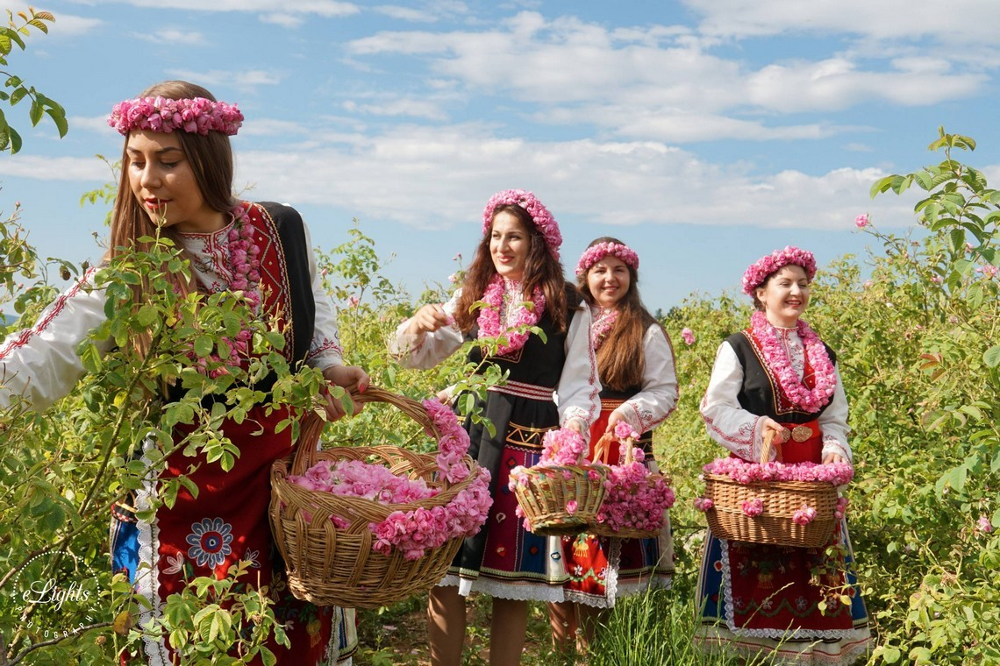
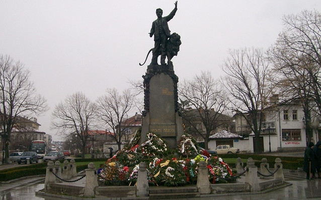

Карлово-Традиции и обичаи
„Празникът на розата“
| Празникът на розата – един от символите на България, е сред най-забележителните фестивали в страната. Той е бил отбелязан за първи път през 1903 г. и от тогава традиционно се провежда през първия уикенд на юни като подготовката и празненствата започват още през май. Това е периодът, през който цъфти маслодайна карловска роза и изпълва със своя аромат цялата Розова долина. Долината, чийто център е Карлово, е една от най-големите розови градини не само в страната, но и в света. Днес Празникът на Розата се е превърнал в международно празненство, в което се забавляват хиляди туристи и гости на града. |  | |
|  | Пищни и красиви, празниците на розата са с индивидуален дух. Пресъздава се ритуалът по брането на цветовете – сутрин, преди още росата да се е изпарила. Този момент привлича множество посетители. Млади момичета облечени в костюми посрещат гостите и ги окичват с гирлянди от розови цветове, предлагат им розово сладко за почерпка. |  |
Празник за Васил Левски
| Карлово е родното място на великия български революционер, наричан "Апостолът на Свободата" - Васил Левски. 18 Юли е неговият рожден ден. Това е и причината, поради която жителите на град Карлово избират датата 18 Юли за официален празник на града. 18 юли - рождената дата на Васил Левски, е празник на град Карлово. На този ден се провежда народен събор - „Ден на Васил Левски", организиран от община Карлово, фондация „Васил Левски", Националния музей „Васил Левски", с традиционно литературно утро в родния дом на Левски, богата художествена програма, научни конференции, спортни и туристически състезания, изложби. Денят завършва с тържествен митинг и празнични илюминации на площада пред паметника на Апостола. |  |